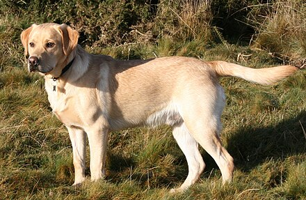
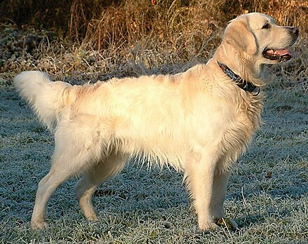

Dog Library!
Most Common Pet Dogs in America
- French Bulldogs
- Labrador Retrievers
- Golden Retrievers
- German Shepherds
- Poodles
- Bulldogs
- Rottweilers
- Beagles
- Dachshunds
- German Shorthaired Pointers
- Pembroke Welsh Corgis
- Australian Shepherds
Quick Facts!
Height: 11-13 inchesWeight: Under 28 pounds
Life Expectancy: 10-12 years
Image Source
Quick Facts!
Origin: United KingdomKnown for being "friendly, energetic, and playful"
Life Expectancy: 10-12 years

Image Source
Quick Facts!
"The breed was created by Sir Dudley Marjoribanks at his Scottish estate Guisachan in the late nineteenth century."
Image Source
Quick Facts!
German Shepherds are often used as police dogs and service dogsHeight: 24-26 inches (male); 22-24 inches (female)

Image Source

Other Popular Dogs Include:
Popular Pet Dog Names
Boy Dog Names:- Charlie
- Max
- Bailey
- Cooper
- Buddy
- Teddy
- Milo
- Oliver
- Tucker
- Toby
Girl Dog Names:
- Bella
- Luna
- Lucy
- Daisy
- Molly
- Lola
- Sadie
- Maggie
- Coco
- Stella